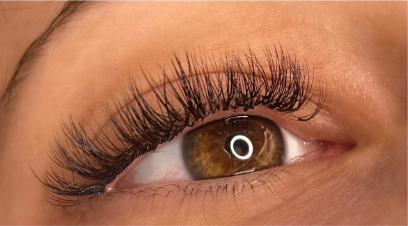
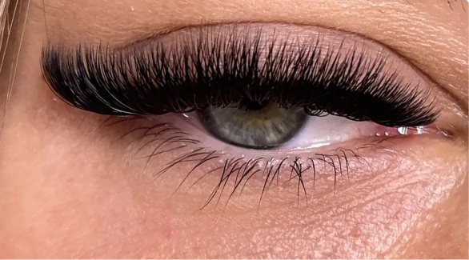

Volume
Servizi
L’extension ciglia tecnica Volume (Russo), consiste nell’opportunità di aumentare la quantità delle ciglia inferiori e superiori, facendole così apparire molto folte. Una tecnica, questa, che dona svariati effetti. Più o meno naturali, più o meno voluminosi. In sostanza, per avere ciglia più lunghe.
A differenza di quello che si può pensare, l’extension ciglia Volume sono più comode da portare rispetto alle One to One. Ma, chiaramente, richiedono una preparazione ed una lavorazione decisamente più imponente.
Per la realizzazione di quest’effetto si utilizzano ventagli di medie dimensioni, ottenendo come risultato finale un giusto riempimento.

